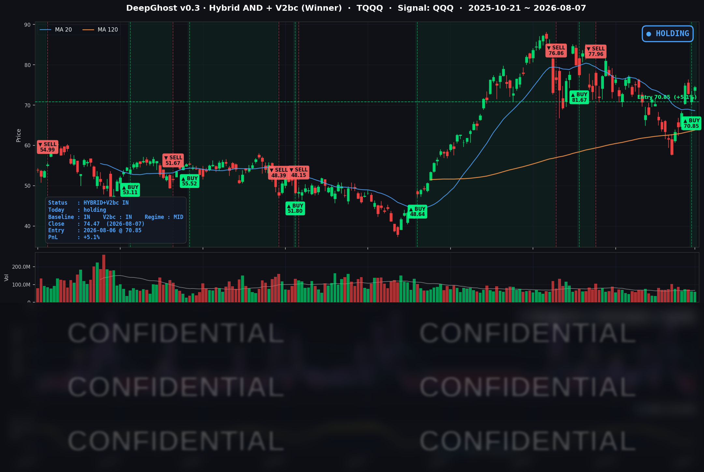

👻 매일 시그널과 히스토리를 홈페이지에서 한눈에 → www.ghostai.co.kr
7월 고용이 크게 부진했지만 시장은 "완화 기대"로 해석하며 성장주·소형주가 올랐습니다. 큰 악재가 없습니다. 9월 FOMC 전까지 랠리를 기대해 봅니다.
📊 오늘의 매매 신호
| 항목 | 내용 |
|---|---|
| 오늘 할 일 | ✅ 아무것도 안 해도 됩니다 |
| 포지션 상태 | 📈 TQQQ 보유 중 (IN POSITION) |
| 매수 진입일 | 2026-08-06 (보유 1일차) |
| 진입가 → 현재가 | $70.85 → $74.47 |
| 현재 포지션 수익 | +5.1% |
TQQQ 시그널 — IN POSITION
현재 상태: 매수 포지션 유지 중 | 누적 수익률 +5.1%

우리 전략은 하루 전인 8월 6일, 단기 조정 자리에서 매수 상태로 전환했습니다. 그리고 바로 다음 날인 오늘, 시장 전체가 위로 튀어 오르는 순풍을 받으며 수익이 +5.1%로 확대됐습니다.
오늘 미국 시장 — 시황 요약
지수 마감
| 지수 | 종가 | 등락률 |
|---|---|---|
| S&P 500 | 7,757.64 | +0.62% |
| 나스닥 종합 | 26,690.62 | +1.30% |
| 다우 존스 | 54,036.93 | +0.28% |
| 러셀 2000 | 3,034.49 | +1.10% |
성장주 중심의 나스닥이 대형가치주 중심의 다우를 큰 폭으로 앞섰습니다. 금리 하락 수혜가 성장주에 집중된 하루였고, 금리에 민감한 소형주(러셀 2000)까지 함께 오르며 대형·소형이 고르게 상승하는 건강한 랠리였습니다.
국채 금리 동향
| 만기 | 수익률 | 전일 대비 |
|---|---|---|
| 3개월 | 3.710% | -2.2bp |
| 5년 | 4.362% | -2.7bp |
| 10년 | 4.660% | -1.0bp |
| 30년 | 5.211% | -0.2bp |
부진한 고용 지표로 정책금리 인하 기대가 커지면서, 커브 앞단(단기·중기 금리)이 장기보다 더 크게 눌린 '불 스티프닝' 양상이 나타났습니다. 10년물과 3개월물의 격차는 +95.0bp로 정상적인 우상향 곡선을 유지했습니다. 단기 금리가 내려가면 성장주의 미래 가치를 할인하는 부담이 줄어들어, 오늘 나스닥 강세를 뒷받침했습니다. 다만 30년물은 5.21%로 거의 내리지 않아, 장기 인플레이션·재정에 대한 경계는 여전히 남아 있습니다.
연준 발언 & 금리 패스
7월 FOMC(7/29)에서 연준은 정책금리를 3.50-3.75%로 동결했지만, 3명의 위원이 오히려 인상 쪽으로 반대표를 던질 만큼 인플레이션 경계가 강한 '매파적 동결'이었습니다. 그러나 오늘의 고용 급랭은 이 매파 시나리오(9월 인상 가능성)를 약화시키며 기대의 무게중심을 동결·완화 쪽으로 옮겼습니다. 연준 자체 스탠스가 바뀐 것은 아니어서, 완화 기대는 아직 데이터에 기댄 '기대'에 머물러 있습니다. 8월 잭슨홀과 다음 물가 지표가 다음 분기점입니다.
오늘의 핵심 이슈
- 7월 고용보고서 쇼크(호재로 해석) — 비농업 신규고용이 -23,000명으로 예상(+83,000명)을 크게 밑돌며 수개월 만에 첫 감소를 기록했습니다. 실업률은 4.1%, 시간당임금 상승률은 3.2%로 2021년 5월 이후 최저였습니다. "나쁜 뉴스가 좋은 뉴스" 논리로 주가는 오르고 금리·달러는 내렸습니다.
- 완화 기대에 따른 성장주·소형주 랠리 — 금리에 민감한 자산(성장주·소형주·금)이 동반 상승하는 전형적인 '금리 하락 트레이드'가 나타났습니다.
- 안전자산 금 급등 — 금 선물이 $4,401.30(+3.76%)으로 사상 최고권에 올랐습니다. 완화 기대와 달러 약세, 지정학 헤지 수요가 겹친 결과입니다.
변동성 & 투자심리
- VIX(공포지수): 14.90 (-1.65%) — 15 아래로 내려가며 안정 국면. 고용 쇼크에도 변동성이 오히려 낮아진 것은 시장이 이 데이터를 '위협'이 아닌 '완화 촉매'로 소화했음을 보여줍니다.
- 공포탐욕 지수: 63 = '탐욕(Greed)' 구간. 낙관 심리가 우위입니다.
전반적으로 금리 하락 + 저변동성 + 대형·소형 동반 상승 + 탐욕 구간이 겹친 리스크온 국면입니다. 다만 금이 사상 최고권으로 함께 급등한 점은, 낙관 속에서도 인플레이션·정책 불확실성에 대한 헤지 수요가 병존하고 있다는 신호입니다.
매크로 & 원자재
- WTI 원유: $77.08 (-0.27%)
- 브렌트 원유: $82.27 (-0.27%)
- 금: $4,401.30 (+3.76%)
원유는 수요 둔화 우려로 보합권 소폭 약세였고, 금은 위험선호 랠리 속에서도 완화 기대·달러 약세·지정학 헤지 수요가 겹치며 급등했습니다.
주요 종목 동향
| 종목 | 종가 | 등락률 | 비고 |
|---|---|---|---|
| AAPL | 313.33 | +0.29% | 대형주 중 부진, 지수 하회 |
| NVDA | 223.96 | +2.27% | 반도체 강세 주도, AI 수요 지속 |
| MSFT | 499.99 | +0.03% | 500선 저항, 사실상 보합 |
| GOOGL | 354.30 | -0.96% | 커버리지 내 최약, 차익실현성 매도 |
| META | 592.10 | +0.37% | 지수 대비 언더퍼폼 |
| AMZN | 274.48 | +0.82% | 완만한 강세 |
| TSLA | 328.58 | +2.83% | 금리 하락 수혜, 성장주 반등 |
| NFLX | 74.14 | +0.61% | 지수 수준 상승 |
| AVGO | 427.76 | +1.71% | AI/반도체 강세 동참 |
| QCOM | 167.86 | +4.66% | 커버리지 최강, 실적 모멘텀 지속 |
| INTC | 101.65 | +1.84% | 반도체 랠리, 100선 회복 |
| MU | 877.57 | -0.44% | 커버리지 내 하락(고가주, 차익실현) |
반도체가 오늘 랠리의 상대강도 최상위였습니다(QCOM +4.66%, NVDA +2.27%, INTC +1.84%, AVGO +1.71%). 금리 하락 수혜와 AI 하드웨어 모멘텀이 섹터 전반을 끌어올렸습니다.
Ghost.AI — Quantitative AI Investment
Model: DeepGhost v0.3 | Transformer-Based Deep Learning
Coverage: 13 tickers | Updated every trading day after US market close
⚠️ 본 자료는 정보 제공 목적으로만 작성되었으며 투자 권유가 아닙니다. 모든 투자의 책임은 투자자 본인에게 있습니다. 과거 성과가 미래 수익을 보장하지 않습니다.
[유의사항]
- 본 서비스는 불특정 다수를 대상으로 발행되는 단방향 정보 제공 서비스이며, 투자자 개인의 재산 상황·투자 목적·위험 선호도를 반영한 개별 투자 조언이 아닙니다.
- 고스트에이아이 주식회사는 고객과 쌍방향 의사소통(개별 상담, 맞춤형 자문 등)을 제공하지 않습니다.
- 본 콘텐츠는 투자 권유 또는 매매 주문의 청약·청약의 권유에 해당하지 않으며, 최종 투자 판단 및 그에 따른 손익의 책임은 전적으로 투자자 본인에게 있습니다.
고스트에이아이 주식회사